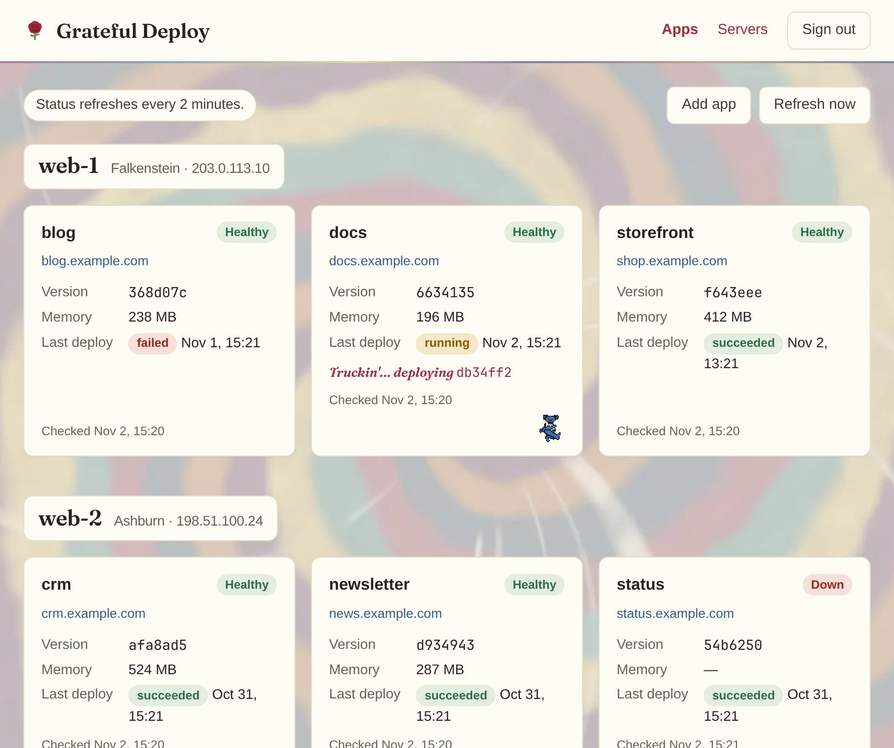
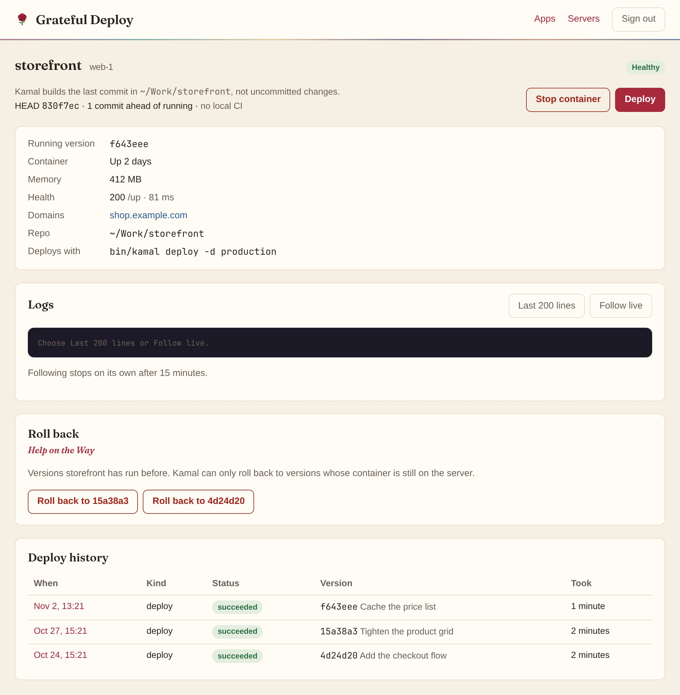
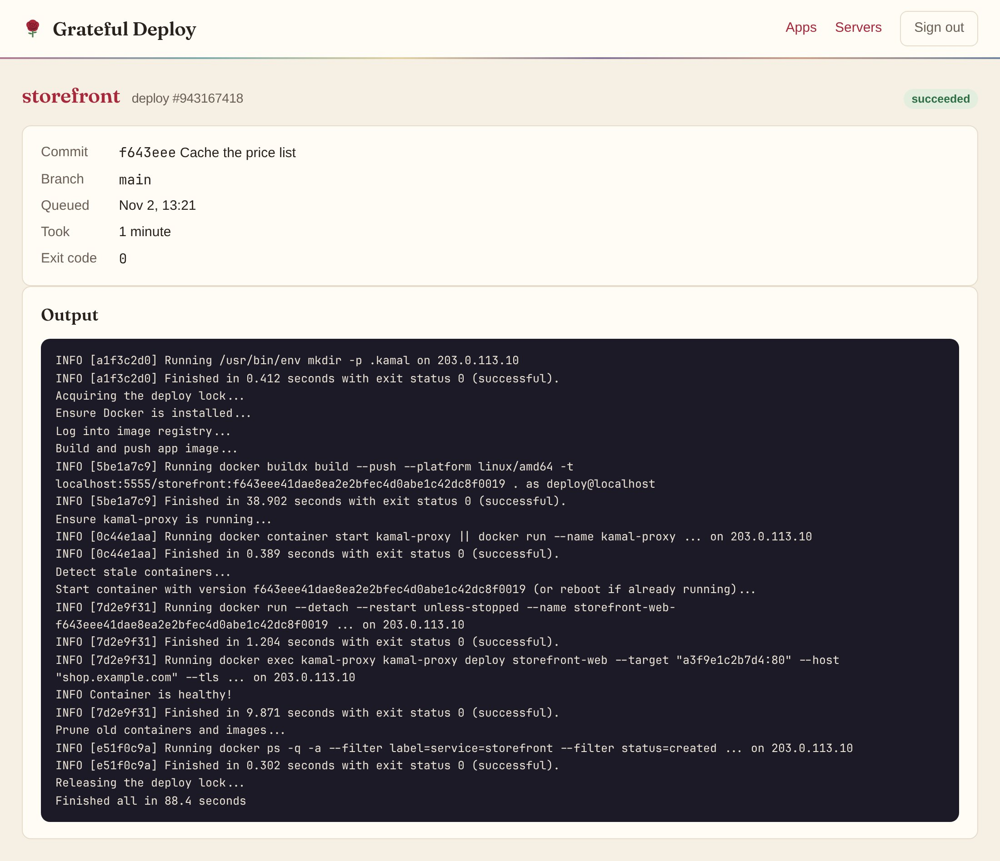
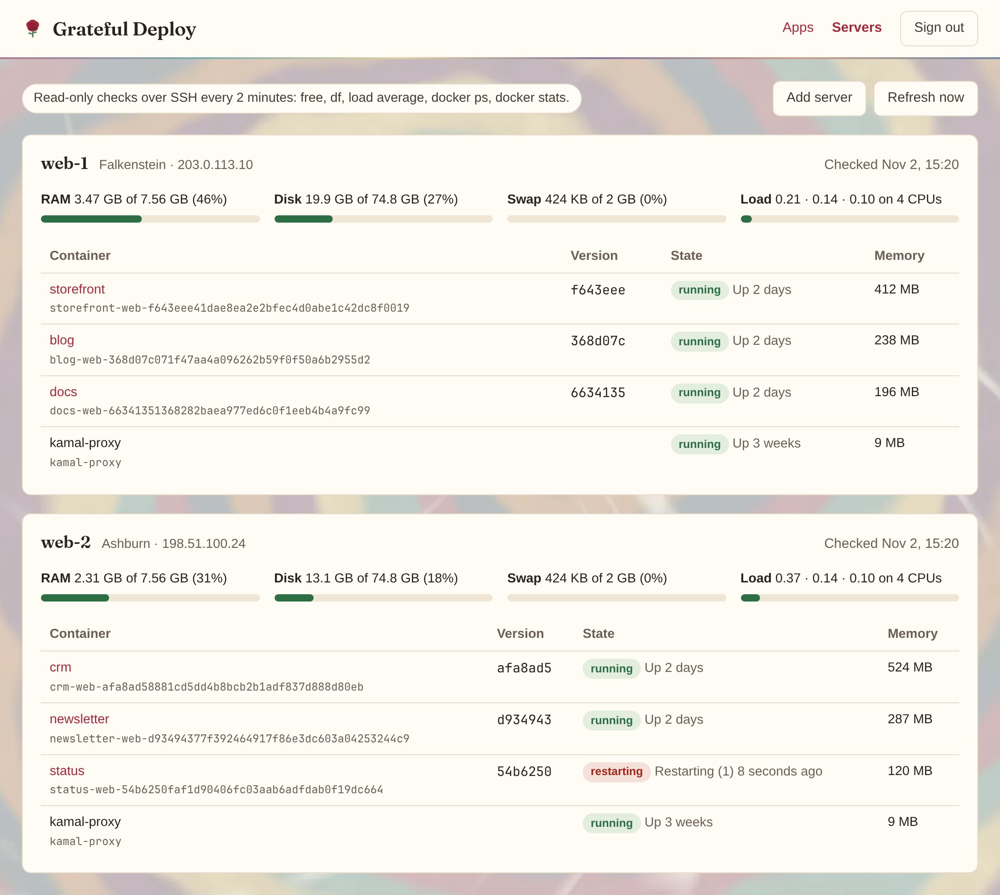

Grateful Deploy
Deploys without the long, strange trip
A dashboard for the apps you deploy with Kamal. Every app gets a card with its running version, health and memory, and a page with Deploy, Roll back and Logs buttons. Each button runs one fixed Kamal or SSH command inside the app's own repo. There's nothing to type.
It runs on your own machine, with your SSH keys and your repos.
Your config stays plain Kamal. Nothing to migrate and nothing to lock you in: deploy from a terminal whenever you like, and Grateful Deploy still records it.
What it does
- Buttons, not commandsDeploy, roll back, stop, start and logs each run one allowlisted Kamal or SSH command, built from argument arrays inside the app's repo. Nothing from a request reaches a shell.
- Live deploy logsKamal's output streams into the page as it runs and is kept with the deploy. One deploy per app at a time, cancelable, and stopped after 20 minutes.
- Health at a glanceEvery two minutes each app's running version, container state, memory and health check (over HTTP or HTTPS, through kamal-proxy) land on its card.
- ServersRAM, disk, swap, load and every container on each server, from read-only SSH checks.
- One-click rollbackRoll back to any earlier version whose container is still on the server.
- Kamal's deploy lockWhile someone else's deploy holds the lock, Deploy waits and the page shows who holds it, with a button to release a lock a dead deploy left behind.
- Terminal deploys count tooA Kamal post-deploy hook reports deploys made from a terminal or CI, so the history and the rollback list include them.
- Secrets scrubbedKeys, tokens, passwords and email addresses are masked in every line of output before it's saved or shown.
- Add appFinds repos with Kamal config in your projects folder, reads it without running its ERB, and writes the new app into your fleet file to review.
- Passwordless sign-inEach sign-in emails a six-digit code.
Screens




Stack
- Ruby 3.4
- Rails 8
- SQLite
- Solid Queue, Cache, Cable
- Hotwire
- Importmap, no build step
- Postgres
- Redis
- Node
- Sidekiq
It runs as a systemd user service on Linux, bound to 127.0.0.1, next to the repos it deploys. On Omarchy it also adds itself to the app launcher.
Quick start
$ git clone https://github.com/joelgaff/Grateful-Deploy.git grateful-deploy
$ cd grateful-deploy
$ bin/setup --skip-server # gems, databases, the pre-push CI hook, config/fleet.yml
$ bin/rails credentials:edit # your own master key and credentials
$ $EDITOR config/fleet.yml # your servers and apps
$ bin/release # install and start the serviceThen open http://127.0.0.1:3100 and sign in with your email. The README covers the fleet file, mail for login codes, and recording deploys made from a terminal.